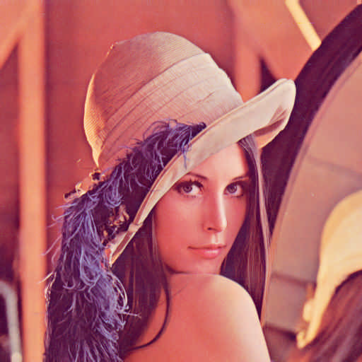
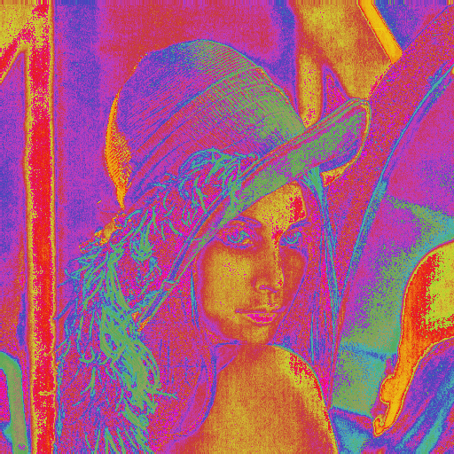
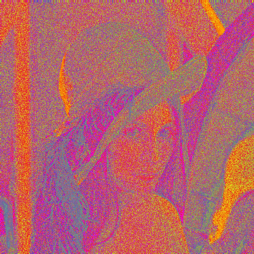

EzCodec
DCT-based image compression с кодированием цвета
через спираль Ферма
Образовательная реализация JPEG-подобного кодека
с поддержкой RGB и экспериментального Fermat-режима
Архитектура проекта
Ввод/Вывод
Picture — загрузка PNG через stb_image, разбивка на блоки
EzcFormat — бинарный формат .ezc, сериализация заголовка и блоков
Преобразования
DCT — прямое и обратное ДКП (наивный O(n⁴))
Quantization — JPEG-таблица квантования, масштабирование по quality
Инфраструктура
ThreadPool — параллельная обработка блоков
FermatColor — кодирование цвета одним числом t ∈ [0,1]
Пайплайн кодирования
RGB
блоки
ДКП
ция
for (int c = 0; c < numChannels; c++) { auto& blocks = picture.getChannelBlocks(c); auto dctBlocks = dctAndQuantize(blocks, quality); // ← параллельно allQuantized[c] = dctBlocks; } writeEzc(outputEzc, header, allQuantized);
Пайплайн декодирования
ция
ДКП
пикселей
for (int c = 0; c < numChannels; c++) { auto reconstructed = dequantizeAndIDCT(allQuantized[c], quality); for (const auto& block : reconstructed) { // запись в interleaved буфер pixels[...* numChannels + c] } } stbi_write_png(output, w, h, numChannels, pixels.data(), stride);
Дискретное косинусное преобразование
Почему 8×8?
Стандарт JPEG. Достаточно мало для локальности (соседние пиксели коррелированы) и достаточно велико для эффективного сжатия. Квантизационная таблица 8×8.
Квантизация
Каждый коэффициент делится на значение из таблицы, масштабированное quality. Высокочастотные компоненты делятся сильнее — человеческий глаз их не замечает.
Формат файла .ezc
| Offset | Байт | Поле |
|---|---|---|
| 0 | 4 | magic "EZC\0" |
| 4 | 1 | version (1/2/3) |
| 5 | 2 | width (LE) |
| 7 | 2 | height (LE) |
| 9 | 1 | quality |
| 10 | 1 | blockDim = 8 |
| 11 | 2 | blockCountX |
| 13 | 2 | blockCountY |
| 15 | 1 | channels (1/3) |
| 16 | 1 | fermat_N (v3) |
| 17 | 1 | fermat_L×100 (v3) |
| 18+ | 128×N | блоки: 64×int16_t |
Обратная совместимость
v1 писал reserved=0 — читается как channels=0, трактуется как 1 (grayscale). v2 = RGB. v3 = Fermat-режим.
Блоки — Channel-major
Сначала все блоки канала R, затем G, затем B. Каждый блок — 64 значения int16_t в little-endian.
Идея спирали Ферма
Один float t ∈ [0,1] → любой цвет
Спираль вписана в HSL-диск. Равномерное покрытие площади гарантировано математически: r = √t.
H = frac(N·t)
L = const (0.5)
Fermat-пайплайн кодирования
пиксель
→ t
кванти-
зация
v3
// Encode: RGB → t float t = Fermat::fromRGB(r, g, b, N); block.at(row, col) = uint16_t(t * 4095.0f); // Decode: t → RGB float t = clamp(block.at(y, x), 0, 4095) / 4095.0f; Fermat::toRGB(t, N, L, r, g, b);
Математика обратной функции
Два источника t
tS = S² — из насыщенности (точно, без двусмысленности)
tH = (H + k) / N — из тона, k = 0…N-1 (неоднозначно)
Алгоритм восстановления
Перебрать k от 0 до N-1, найти tH ближайший к tS. Взвешенное среднее: у краёв диска доверяем Hue, у центра — Saturation.
Точность round-trip
| Зона | Источник ошибки | Точность |
| S → 1 (края) | 8-bit PNG | ~1/(255·N) |
| S → 0 (центр) | Hue нестабилен | деградирует |
| t = 0 | сингулярность | не восстановим |
Почему шум при большом N?
DCT вносит ошибку ~Δt. Ошибка Hue = N·Δt.
При N=12, Δt=2% → ошибка 24° — видимый шум.
Фикс: t×4095 + малый N.
Результаты сжатия
 Оригинал · 474 KB
Оригинал · 474 KB

RGB q=30 · 3 канала
Fermat N=3 q=80
Fermat N=16 q=95CLI — использование
# Стандартное RGB кодирование ezcodec encode -i photo.png -o photo.ezc -q 80 ezcodec decode -i photo.ezc -o out.png # Fermat — 1 канал вместо 3 ezcodec encode -i photo.png -o photo.ezc -q 80 --fermat ezcodec encode -i photo.png -o photo.ezc -q 95 --fermat --fermat-n 16 --fermat-l 0.5 # Декодирование — режим определяется из заголовка автоматически ezcodec decode -i photo.ezc -o out.png # Тесты ctest --test-dir build